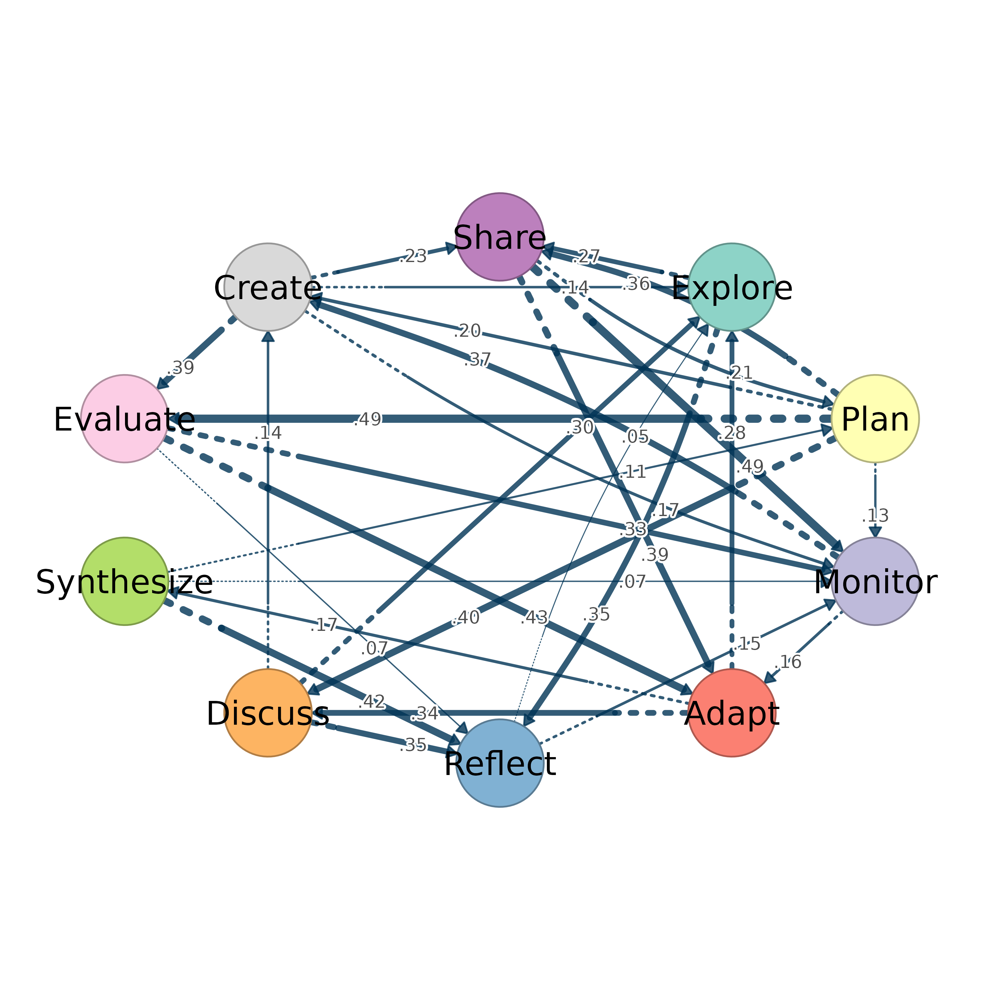

A synthetic weighted transition network among ten learning regulation states, used in the package examples and the introduction vignette. Each cell holds the weight of the transition from the row state to the column state.
Format
A 10 x 10 numeric matrix with row and column names Explore,
Plan, Monitor, Adapt, Reflect, Discuss,
Synthesize, Evaluate, Create and Share. Thirty
of the 90 off-diagonal cells carry weights between 0.05 and 0.49. The
remaining cells, including the diagonal, are zero.
Details
The network is synthetic and represents no observed data. It was
generated with set.seed(42). Thirty off-diagonal cells were drawn
at random and given weights drawn uniformly between 0.05 and 0.5, rounded
to two decimals. Rows are not normalized.
Examples
regulation_net
#> Explore Plan Monitor Adapt Reflect Discuss Synthesize Evaluate
#> Explore 0.00 0.00 0.00 0.00 0.35 0.00 0.00 0.00
#> Plan 0.00 0.00 0.13 0.00 0.00 0.40 0.00 0.49
#> Monitor 0.00 0.00 0.00 0.16 0.00 0.00 0.00 0.00
#> Adapt 0.28 0.00 0.00 0.00 0.00 0.34 0.17 0.00
#> Reflect 0.05 0.00 0.15 0.00 0.00 0.00 0.00 0.00
#> Discuss 0.30 0.00 0.00 0.00 0.35 0.00 0.00 0.00
#> Synthesize 0.00 0.11 0.07 0.00 0.42 0.00 0.00 0.00
#> Evaluate 0.00 0.00 0.33 0.43 0.07 0.00 0.00 0.00
#> Create 0.14 0.00 0.17 0.00 0.00 0.00 0.00 0.39
#> Share 0.00 0.21 0.49 0.39 0.00 0.00 0.00 0.00
#> Create Share
#> Explore 0.00 0.27
#> Plan 0.20 0.36
#> Monitor 0.37 0.00
#> Adapt 0.00 0.00
#> Reflect 0.00 0.00
#> Discuss 0.14 0.00
#> Synthesize 0.00 0.00
#> Evaluate 0.00 0.00
#> Create 0.00 0.23
#> Share 0.00 0.00
splot(regulation_net, tna_styling = TRUE)
